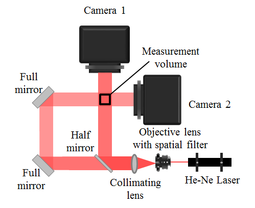
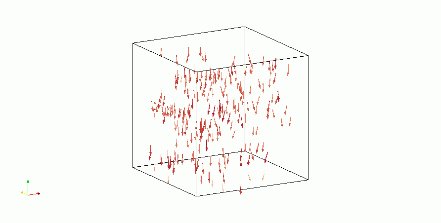

Research results
Ghost particles are one of the detection problems faced in tomographic digital holography using two cameras. Ghost particles are caused by reconstructed particle elongation in digital holography. In this paper, we propose a method to reduce ghost particles in tomographic digital holography by using iterative volumetric filtering. To evaluate the effect of iterative volumetric filtering, we conducted numerical simulations and calculated the signal-to-noise ratio. The results of the numerical simulation and experimental demonstration showed that this method suppresses the effect of ghost particles.
Iterative volumetric filtering
Ghost particles are produced because the reconstructed particle has long particle elongation.
Therefore, we developed the iterative volumetric filtering method to overcome this problem. Particle elongations are reduced by this filtering,
and the number of intersection points is also reduced.

Optical setup for tomographic digital holography
|
|
|

Three dimensional velocity field of settling particles
|
¥ÿœ¢∂»¿”
- Calibration along the depth direction in tomographic digital holography
Shunsuke TANI, Yohsuke TANAKA and Shigeru MURATA
ICHSIP 31, Paper Number:1B-P06, Suita, Osaka, Japan, November 7-10, 2016.
- Reduction of Ghost Particles on Tomographic Digital Holography by Using Iterative Volumetric Filtering
Shunsuke TANI, Yohsuke TANAKA and Shigeru MURATA
10th International Symposium on Advanced Science and Technology in Experimental Mechanics, Paper Number:58, Matsue, Shimane, Japan, November 1-4, 2015.
- Measurement of Three-dimensional Particle Distribution by Tomographic Digital Holography
Shunsuke Tani, Yohsuke Tanaka and Shigeru Murata
ASME-JSME-KSME Joint Fluids Engineering Conference 2015, Seoul, Korea, July 26-31, 2015.
BACK
|
© Measurement System Laboratory, Kyoto Institute of Technology.

|